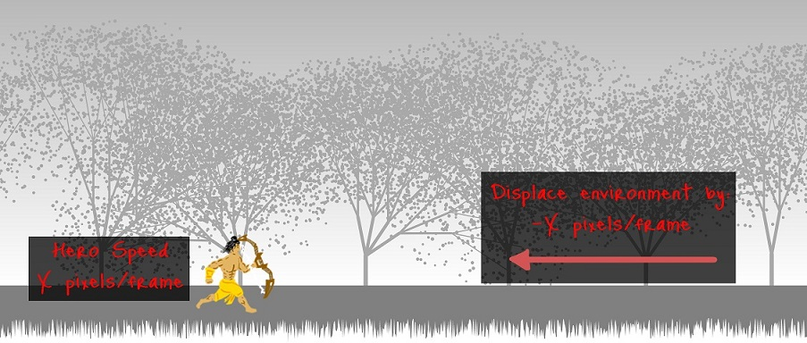
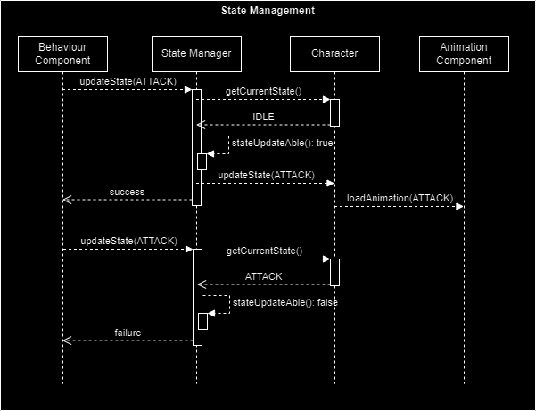
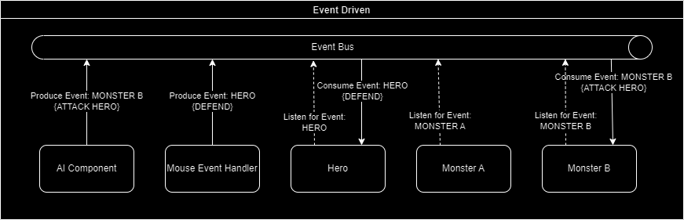

Segment number 50.
Had to be special. So another game. This time a platformer.
For those not aware of what a platformer is, think Mario. To be precise, think Super Mario on NES.
My original idea was to make something like The Legend of Kage. Ninjas and Samurais slashing away. But then I thought let's have something based on Indian mythology.
This is inspired from Ramayan - specifically from the part where Lord Ram helps Sugreev get back his kingdom from Vali in the forests of Kishkindha. I never liked the idea of how Lord Ram killed Vali while the brothers duel. Didn't give out the Maryada Purushottam vibes.
So here is my take on what if Lord Ram went into the forests of Kishkindha on his own and defeated the invincible Vali.
A little bit on what went into creating this segment. Skip if you aren't interested in the nerdy stuff.
Like a true software engineer, I broke the game into smaller problems.
With the sub-problems addressed, now to bring all of them together. The rendering of environment, character and effects. Executing monster behavior. Animate characters. Executing player commands. That's where some design knowledge comes handy to implement effective orchestration.
In Platformers (any game for that matter), the camera follows the hero everywhere. Same here, only simpler (forward or backward).

To simulate the follow the hero effect, when our hero Lord Ram moves, he animates in place while the whole environment is displaced in the opposite direction. This illusion is made further effective by displacing the environment proportional to the hero speed.
As for the environment itself, layers of (2D) trees are rendered to depict Kishkindha forest. The trees are rendered in a pseudo-random manner.
Check out the demo here.
My original idea was to keep rendering the environment as the hero moves, an infinite environment so to speak. But there were significant challenges there. The primary one being rendering so many trees caused the frame rate to drop to embarrassing levels. Instead, the environment is now pre rendred in a way that it can be buffered and looped over once the end (in either direction) is reached.
Long story short - Sprites
I had already done some segments earlier which used sprites (Simulated Combat, Another Holi Special). In this segment, more control has been added:
Check out the sprite animation demo here.
While sprite animation works, adding speed lines to the key action frames gives it much more impact. Be it to show very fast movement, or to show the mighty swing of a weapon.
Check out the speed lines demo here.
With animation sorted out, it's time for some behavior to be defined!
Monsters are the enemies that are out to take you down. The player has to survive and take them down instead to win the game.
In this game these would be Vanaras, Jambuvans and the boss Vali. How would they behave? Basically what would trigger their actions (and corresponding animations)?
This came down to answering the following questions:
How and when will the monster engage the hero?
In Super Mario, the monsters patrol back and forth between two points. Mario had to evade them (by jumping over). That would have been too simple for this game.
Here, the monsters stand guard at different points in Kishkindha forest. As the hero progresses through the forest, he encounters the monsters. It is at this point the monster engages the hero.
The way the monster engages is determined by his aggressiveness (quantified by the initiative attribute). Vanaras are the least aggressive.
How will the enemy attack the hero?
Once engaged, the monster attacks the hero. Monsters have more than one attack move at their disposal. Ok fine, I was too lazy to code in and art out more than two attacks per character!
Nevertheless, which attack to perform needs to be determined. One of the decision factors is whether the hero is in the range of the attack. In case the hero is out of range, the monster will move towards the hero to get in range.
Keep it simple. Just mouse inputs.
One memory that I have from playing all those Mario games were those difficult jumps. If one does not press the button at the right moment, Mario would fall into the gap and the game starts again.
This is a mouse controlled game and I wanted to have something similar here. So a Custom Mouse Event Handler to dampen and ignore rapid clicks. Rather than clicking furiously, the player has to be patient and click with deliberate intervals to control the hero properly!
Custom Mouse Event Handler
In this game, there are four input commands:
Actual mouse events generated are:
The event has information of which button was pressed. So to check if the hero was commanded to move forward,
Moreover, a mouse click generates 3 events, Mouse Down, Mouse Up and Mouse Clicked. If all three are processed, then the Hero starts moving, then stops moving and then executes attack.
To solve this, the custom event handler has an internal queue. All the generated mouse events are captured and enqueued here. So for a mouse click, the queue would look like:
After an interval, a Process Phase would run on the internal queue. This would eliminate the additional Mouse Down/Up events. Process the Click event and clear the queue for the next set of captures.
By adjusting the time interval, the abilities of the capture/process function is extended to enable the feature of ignoring rapid clicks. For example, lets say three consecutive clicks are captured and enqueued. During the process phase, just the first click will be entertained and executed.
The fun stuff
The Game Engine is the heart of the system.
Everything, the environment, all the characters, each and every effect, are added to the engine as Game Objects. The engine has the responsibility to run the game loop. At every loop it does the following major tasks:
For the characters, the animation component is responsible for the animation loops and the selection of the correct image to render.
The behavior on the other hand is handled by the ai component for the monsters and the user inputs for the hero.
The need now is to tie them together with stress on loose coupling. Why? Because there are some interesting cases that need to be handled. For example, in between executing an attack, the character should not be able to suddenly start to run. This validation should neither lie with the component that triggers behavior commands nor should it lie with the animation component which runs the animation.
State Manager
The solution comes by maintaining States for the characters. The behavior component requests a State change in the character (from IDLE to MOVE FORWARD). The State Manager validates the request and changes the State. The animation component is then updated with accordingly if it needs to load a new animation sequence.
This is a simplified view of the State Manager.

While the engine handles the orchestration of sequential tasks, there are a few operations which cannot be handled in a sequential manner.
The two such major use cases that come to mind:
Other use cases:
Event Bus
This is where event driven architecture shines. Events are generated with respect to some triggers, in our case, user inputs and ai commands. These events are published to the event-bus. Subscribers, in our case, hero and monsters, would listen on the event-bus and pick up events of their interest, and act upon them.
The advantage here is again loose coupling. The event publisher is only responsible to generate the event, on the other hand the subscriber is only responsible to consume and process the event.
This is a simplified flow and does not include the State Manager.

List of libraries used here:
One of the greatest Epic ever ... Ramayan.